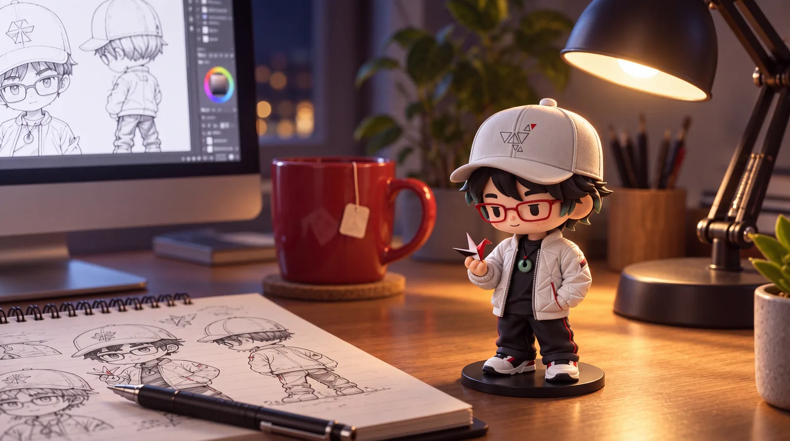

About · The studio
Humans is the critical layer. AI is the technical.
Design × AI
How AI empowers, and elevate, creative work. Generative systems, workflow architecture, and human-in-the-loop design: AI handles execution while the human directs critically and strategically..
Who I am
Ken Bai, a Creative Technologist based in Queens, NY. 12+ years bridging design, technology, and AI systems; removing the friction between creative people and the tools they use.
Creative Technology Analyst and Mac Systems Lead at Pratt Institute: deploying AI applications across the Institute, building LLM-powered workflows for 500+ active users, leading a cross-functional team of 20+, architecting a 250+ Apple endpoint fleet. Working directly with faculty to translate curriculum needs into technical solutions: emerging AI tools plus the infrastructure that makes them usable in a creative institution.
Founder & Creative Director of White Crane Design LLC, a studio and lab for AI-assisted design systems, generative pipelines, and automation workflows. White Crane Labs is the public documentation of that work. Completing a Master of Professional Studies in Design Management at Pratt, expected 2027. The work here is the practicum.
Human in the loop. Always.